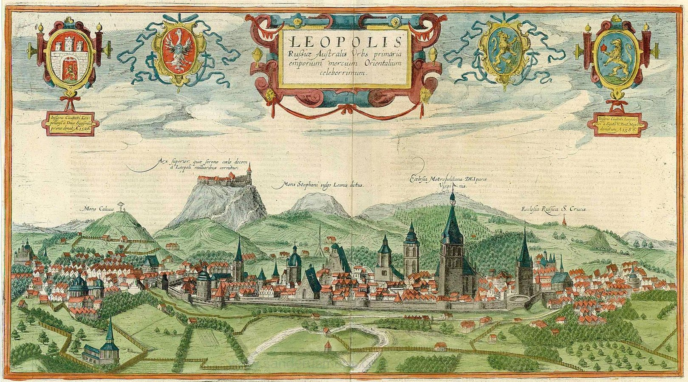

Дім Франка
Це місце, де розквітають магнолії та оживають слова, запрошуючи кожного в музей-садибу...
Читати далі →Львів - це місто, яке потрібно відчути. І я сподіваюся, що цей сайт стане вашим провідником у цьому процесі.
Читати блогДілюся тим, що бачу і відчуваю сама

Це місце, де розквітають магнолії та оживають слова, запрошуючи кожного в музей-садибу...
Читати далі →
Перша письмова згадка про місто датується 1256 роком. Дізнайтеся, як король Данило Галицький будував місто для свого сина Лева....
Читати далі →
Це мальовничий природний парк з екзотичними рослинами та оранжереями, що ідеально підходить для прогулянок, естетичних фотосесій....
Читати далі →